6. 테스트 및 트러블슈팅
이번 장에서는 현재까지 완성된 시나리오를 바탕으로 전화를 걸어 테스트를 해보고, 문제가 있을 경우 트러블슈팅을 하는 방법을 확인해봅니다.
전화 테스트
-
아래와 같이 Phone numbers 메뉴로 이동합니다. 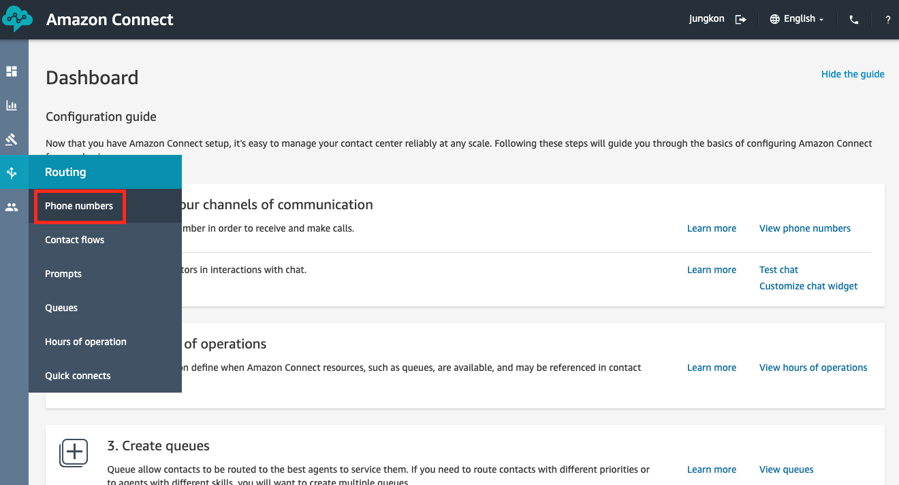
-
이전에 발급받은 전화번호가 있습니다. 아래의 번호를 기록해둡니다. 우선 이 번호를 클릭하여 편집합니다.
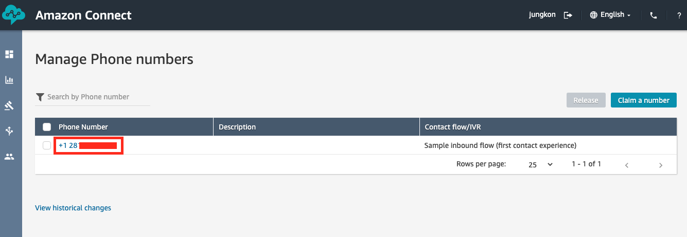
-
Contact flow / IVR 항목을 ConnectIMD1 로 설정합니다. 이 번호로 인입하는 전화가 처음으로 실행할 IVR 시나리오, 즉 Contact flow 를 지정합니다.

-
‘Welcome to amazon connect immersion day’ 멘트 이후에, DynamoDB에 입력해두었던 자신의 이름(firstname)을 멘트로 듣고, 생년월일(birthdate)을 입력하여 ‘Thank you’ 멘트까지 확인했다면, 제대로 실습이 진행 된 것입니다. 만약 제대로 진행이 안되고 전화가 바로 끊기거나 다른 멘트를 들었다면, 아래의 트러블슈팅을 참고하시기 바랍니다. 정확히 실습을 완료했더라도 아래의 디버깅 방법을 알아두면 유용하게 사용할 수 있으니 확인 해보시기 바랍니다.
Cloudwatch Log groups
-
AWS 콘솔로 접속합니다. 아래 화면과 같이 cloudwatch 서비스로 이동합니다. cloudwatch 는 AWS 내의 모든 인프라를 모니터링하고 로그를 확인할 수 있는 곳입니다. 이전 장 2.전역 설정 / Contact Flow 전역 설정 에서 Set logging behavior Command Block에서 Enable 로 설정을 했습니다. 이 경우, 모든 Contact Flow 관련 로그는 cloudwatch 서비스에 자동으로 저장이 됩니다. Lambda 에서 불러온 값, 고객이 선택한 항목, 진행 분기 등의 기록을 모두 확인할 수 있습니다. 이 로그를 Contact Flow Log 라고 합니다. 자세한 내용은 Enable contact flow logs 를 참고하시기 바랍니다. 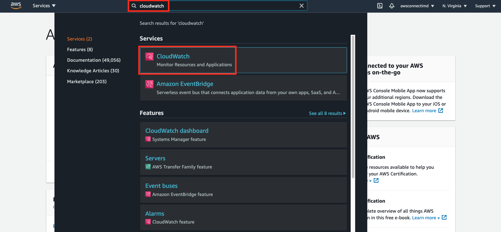
-
cloudwatch 의 dashboard 화면입니다. 왼쪽 메뉴에서 Log groups 항목를 선택합니다. 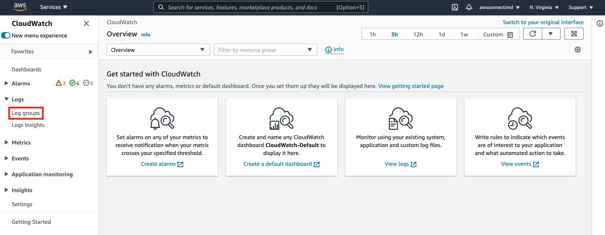
-
생성한 Connect 인스턴스 별로 Log 들이 생성되어 있습니다. 자신이 생성한 Connect 인스턴스 항목을 클릭하여 진행합니다. 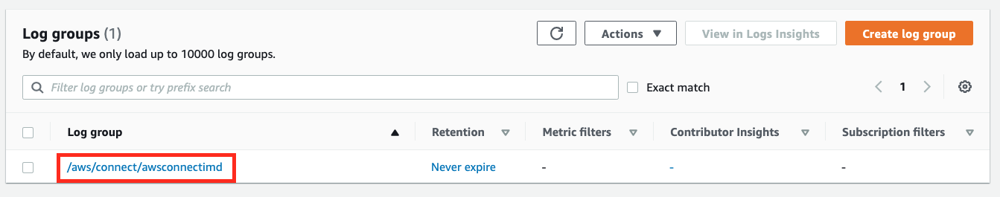
-
Last event time 컬럼을 보고 문제가 발생한 시간대의 로그 stream 을 선택합니다. 가장 위의 아이템이 가장 최근에 발생한 로그 stream 입니다. 기본적으로 하나의 로그 스트림은 하나의 Contact ID 에 관련된 로그를 가지고 있다고 볼 수 있습니다. 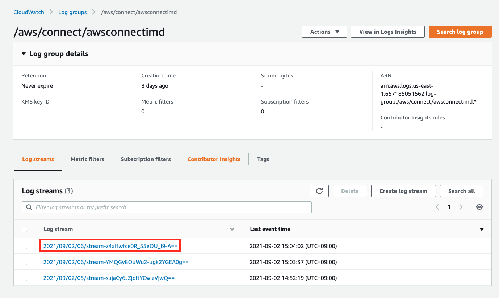
-
상세 로그를 확인할 수 있습니다. Json 형태로 각각의 아이템을 확인할 수도 있고, View as text 를 체크하여 한 눈에 모든 로그를 Text 형태로 볼 수도 있습니다. 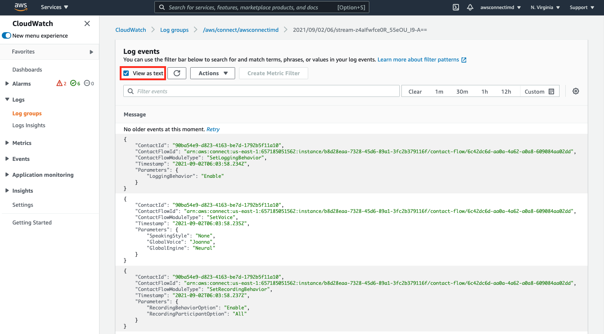
트러블 슈팅
Welcome to amazon connect immersion day 멘트 이후 바로 통화가 종료 될 때 (1)
고객 정보를 제대로 가져오지 못한 경우이거나 고객 정보가 제대로 입력되지 않은 경우입니다.
-
Lambda 함수 호출이 제대로 되었는지 확인하기 위해, invoke 또는 lambda 로 검색을 해봅니다. 다음과 같은 레코드를 확인할 수 있습니다. Error Code 가 403 인 것을 보니 없는 리소스를 호출했거나, 권한이 제대로 설정되지 않은 (Connect 에 등록하지 않은) Lambda 함수를 호출 했을 가능성이 있습니다. FunctionArn 부분을 보니 저희가 이전 장에서 지정한 Lambda 함수 이름이 아닙니다. 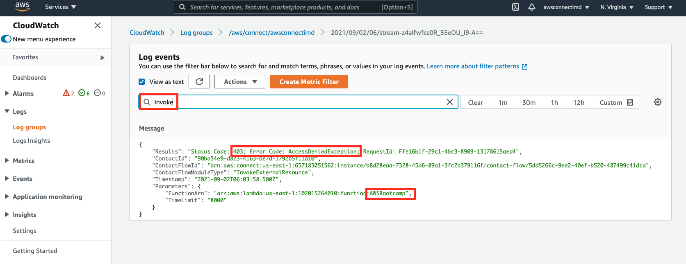
-
다시 Contact Flow (ConnectIMD3)에서 Invoke AWS Lambda function Command block 의 설정을 아래 화면과 같이 변경합니다. Save 버튼을 클릭하여 설정을 저장합니다. 이후 Contact Flow 를 Publish 하고 다시 테스트 해봅니다. 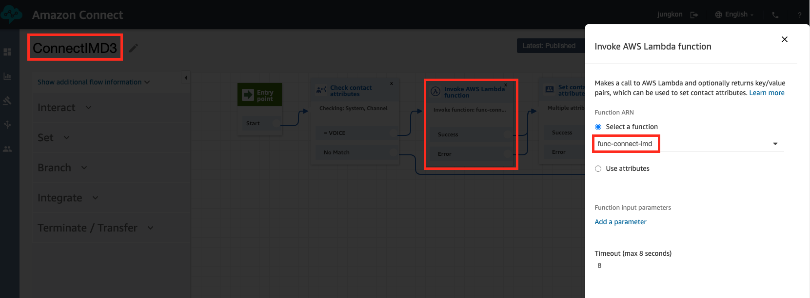
Welcome to amazon connect immersion day 멘트 이후 바로 통화가 종료 될 때 (2)
위 항목처럼 Lambda 함수 호출 결과를 봐도 모든 값을 제대로 가져왔는데도 문제가 있을 수 있습니다. 이럴때는 Attribute 값을 제대로 가져오지 못했을 수 있습니다.
-
Lambda 함수 호출 결과를 확인해도 이상이 없다면, Welcome~ 멘트 이후 어떻게 진행됐는지 확인해봅니다. 확인해보니 아래처럼 CheckAttribute 비교 결과가 false 이며, Success와 비교하는 값이 비어있는 것을 확인할 수 있습니다. 이 부분은 Lambda 함수가 호출이 제대로 되었는지 확인하기 위해서 message 변수를 확인하는 곳입니다. Lambda 에서 message 값을 잘 가져왔으나 여기에서 설정이 되어있지 않다면, ConnectIMD3 Contact Flow 의 SetContactAttributes Contact Flow 구성 부분 에서 잘못 설정했을 수 있습니다.

-
Connect 콘솔에서 Contact flows 메뉴로 이동하여 ConnectIMD3 를 편집합니다. 아래와 같이 message 항목이 대문자로 잘못 입력된 것을 확인할 수 있습니다. 수정하여 다시 Save 버튼을 클릭하여 저장하고, Publish 이후 다시 테스트해봅니다. 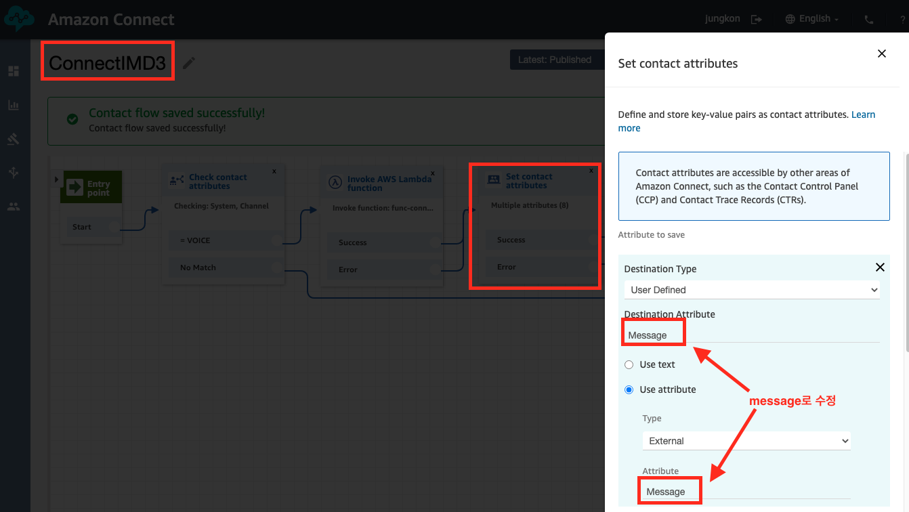
생년월일을 입력해도 인증이 되지 않고 (Our records didn’t match the number entered.) 멘트가 나오는 경우
DynamoDB 에 고객 정보를 입력 시 생년월일 (birthdate) 가 제대로 입력되지 않았을 수 있습니다.
-
생년월일을 고객으로부터 DTMF로 입력받아 고객정보와 비교하는 곳을 확인하기 위해 Check 로 검색해봅니다. 확인해보니 입력한 값과 고객정보의 생년월일이 다른 것을 확인할 수 있습니다. 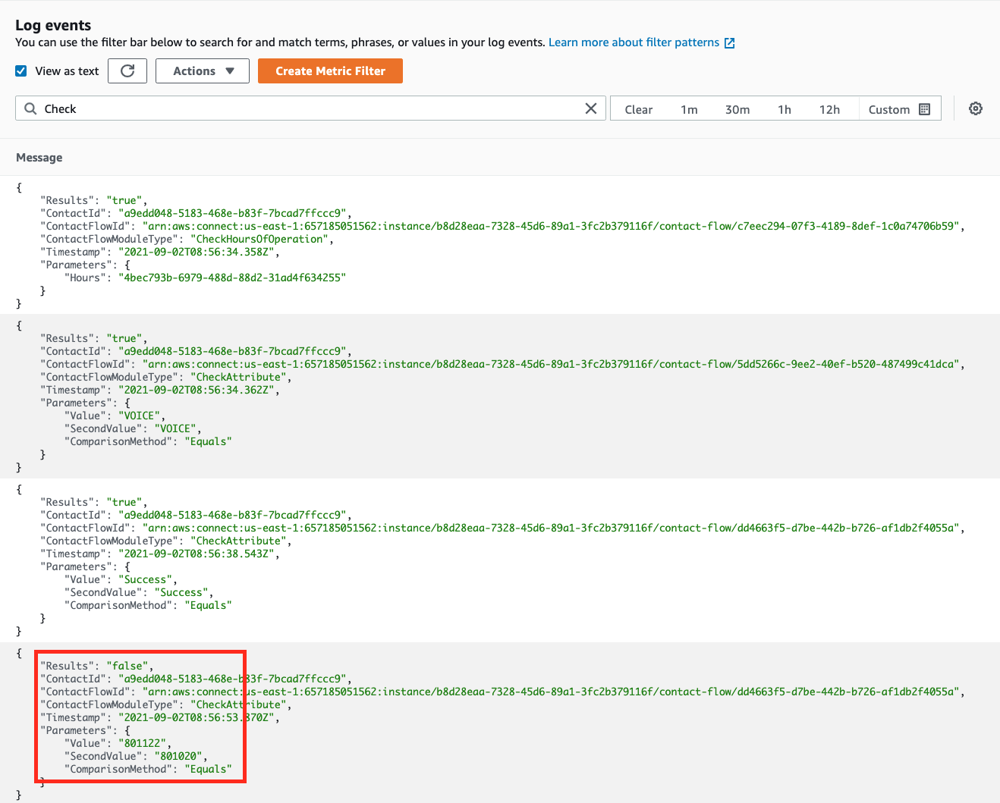
-
실제 birthdate가 어떤 값인지 확인하기 위해 birthdate로 검색해봅니다. 실제로 불러온 값을 확인할 수 있습니다. 실제로 불러온 값이 틀렸는지, 입력한 값이 틀렸는지를 확인해서 실제로 불러온 값이 틀렸다면, DynamoDB에서 수정을 해야합니다. 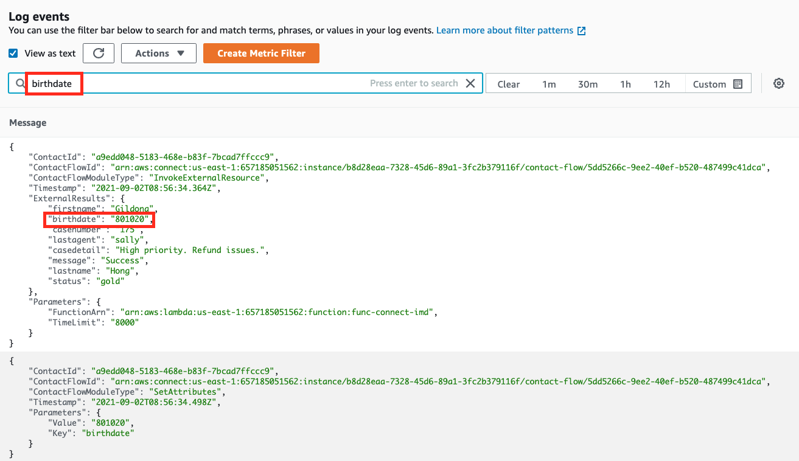
-
DynamoDB 로 이동하여 Item 값을 수정하기 위해 Item을 클릭합니다. 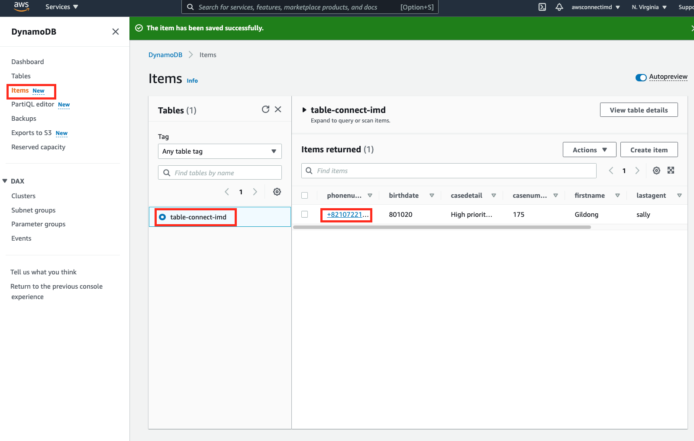
-
birthdate를 올바른 값으로 수정 후 저장합니다. 이후 다시 테스트를 진행해봅니다. 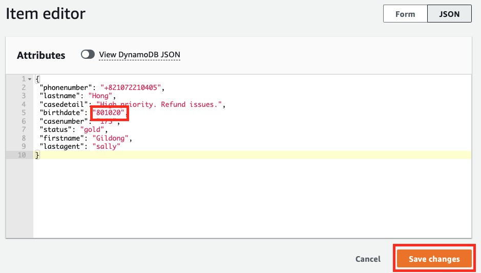
고객의 인입 전화의 전화번호를 확인하여, 고객 정보 DB와 비교 이후, 고객 인증을 하는 것까지 시나리오를 완성했고 테스트 및 트러블 슈팅 방법까지 확인했습니다. 이제 다음장에서는 고객에게 연결할 부서를 선택하게 한 이후 상담원과 통화할 수 있도록 해당 대기열 (Queue)로 보내주는 시나리오를 구성해봅니다.